Novels
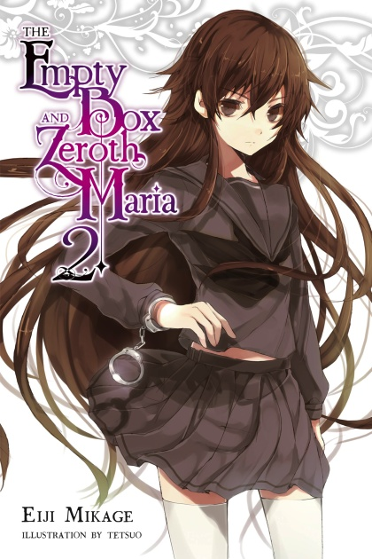
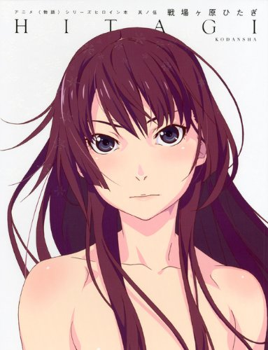
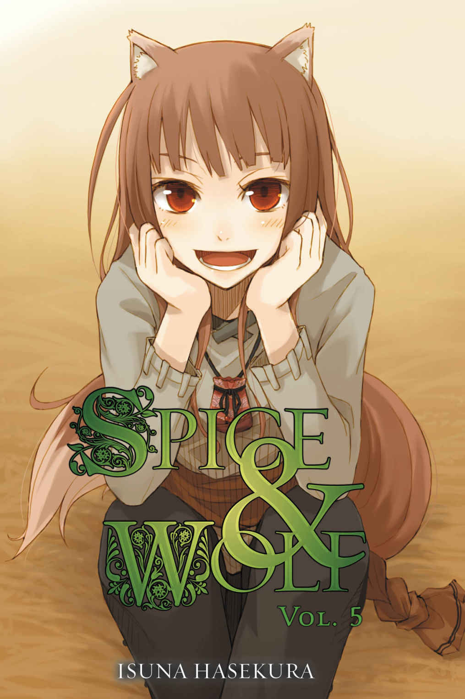

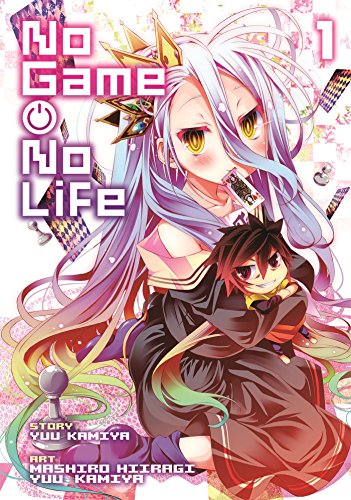
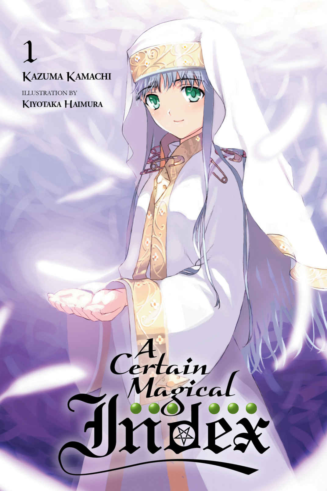
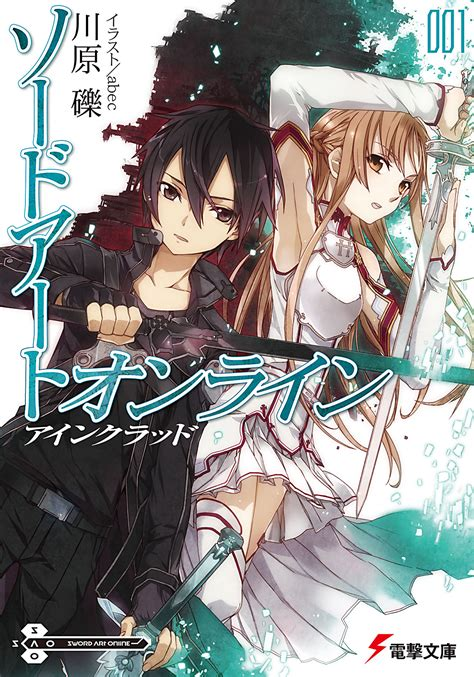
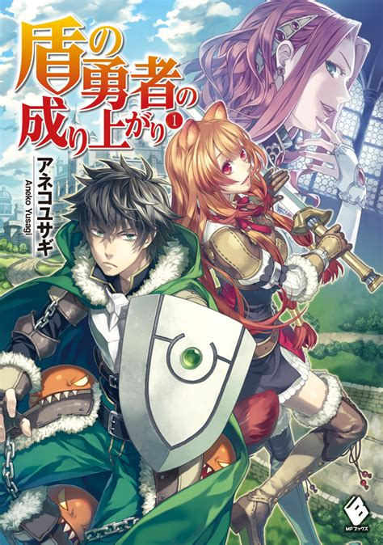
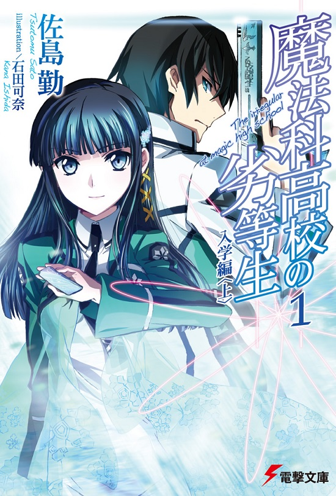
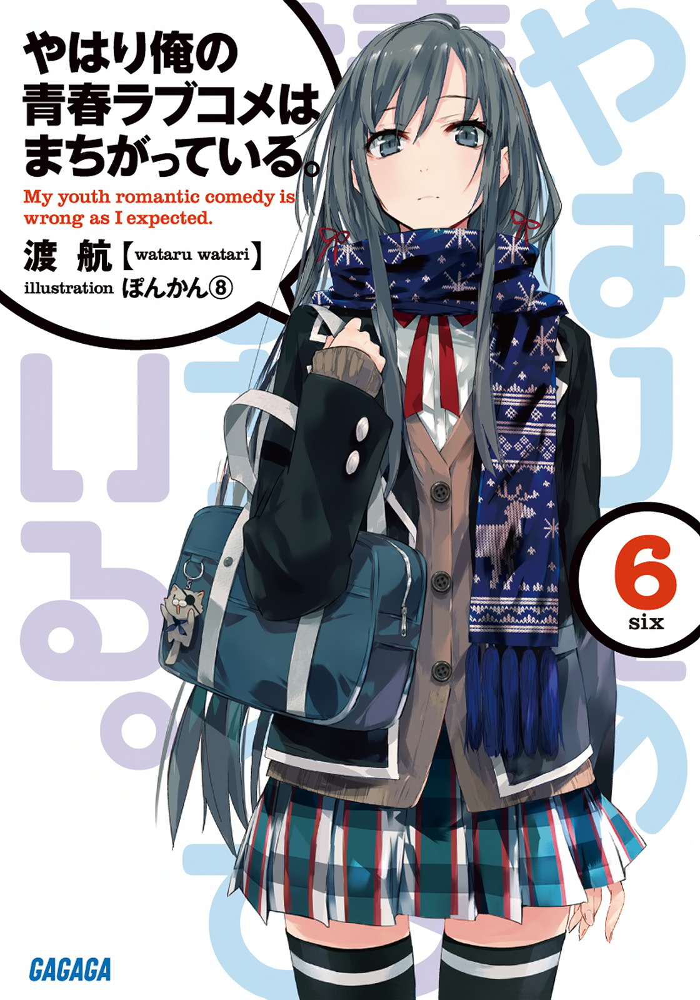
{kind=link}
The Empty Box and the Zeroth Maria
By Mikage, Eiji (Story), Tetsuo (Art)
Kazuki Hoshino values his everyday life above all else. He spends the days carefree with his friends at school,
until the uneventful bliss suddenly comes to a halt with the transfer of the aloof beauty Aya Otonashi into his class and her cold,
dramatic statement to him immediately upon arrival: "I'm here to break you. This is the 13,118th time I've transferred. After so many occasions,
I have to say that this is all starting to grate on me,which is why this time I'm spicing things up with a proper declaration of war."
And with those puzzling words, the ordinary days that Kazuki loved so dearly become a cycle of turmoil and fear—Aya's sudden appearance
signals the unraveling of unseen mysteries surrounding Kazuki's seemingly normal friends, including the discovery of mysterious devices known as "boxes."
until the uneventful bliss suddenly comes to a halt with the transfer of the aloof beauty Aya Otonashi into his class and her cold,
dramatic statement to him immediately upon arrival: "I'm here to break you. This is the 13,118th time I've transferred. After so many occasions,
I have to say that this is all starting to grate on me,which is why this time I'm spicing things up with a proper declaration of war."
And with those puzzling words, the ordinary days that Kazuki loved so dearly become a cycle of turmoil and fear—Aya's sudden appearance
signals the unraveling of unseen mysteries surrounding Kazuki's seemingly normal friends, including the discovery of mysterious devices known as "boxes."
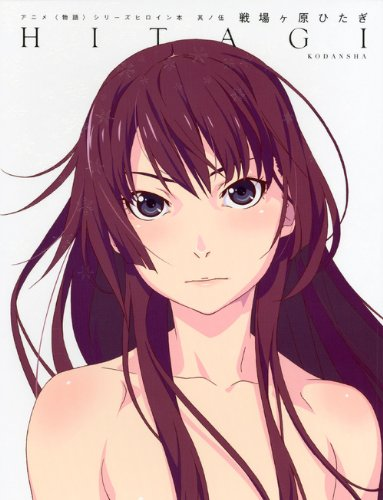
{kind=link}
Monogatari Series
By Nisio Isin (Story), Vofan (Art)
The Monogatari series is a collection of Japanese light novels written by Nisio Isin, with illustrations by Vofan.
The novels share the common suffix -monogatari (物語, meaning "story"). The series centers around Koyomi Araragi,
a third-year high school student who survived a vampire attack before the beginning of the story, and finds himself mixed up with all kinds of
apparitions, gods, ghosts, mythological beasts, and spirits. The series began with the publication of three short stories in Kodansha's Mephisto magazine
between the September 2005 and May 2006 issues. These stories were later collected into the first volume of the light novel series released in November 2006.
As of June 2018, there are 24 novels in the series. Nisio Isin has also penned a number of short short stories and other related works set in the
same fictional universe, listed below. Vertical has licensed the Kizumonogatari, Bakemonogatari and Nisemonogatari novels for English release.
The novels share the common suffix -monogatari (物語, meaning "story"). The series centers around Koyomi Araragi,
a third-year high school student who survived a vampire attack before the beginning of the story, and finds himself mixed up with all kinds of
apparitions, gods, ghosts, mythological beasts, and spirits. The series began with the publication of three short stories in Kodansha's Mephisto magazine
between the September 2005 and May 2006 issues. These stories were later collected into the first volume of the light novel series released in November 2006.
As of June 2018, there are 24 novels in the series. Nisio Isin has also penned a number of short short stories and other related works set in the
same fictional universe, listed below. Vertical has licensed the Kizumonogatari, Bakemonogatari and Nisemonogatari novels for English release.
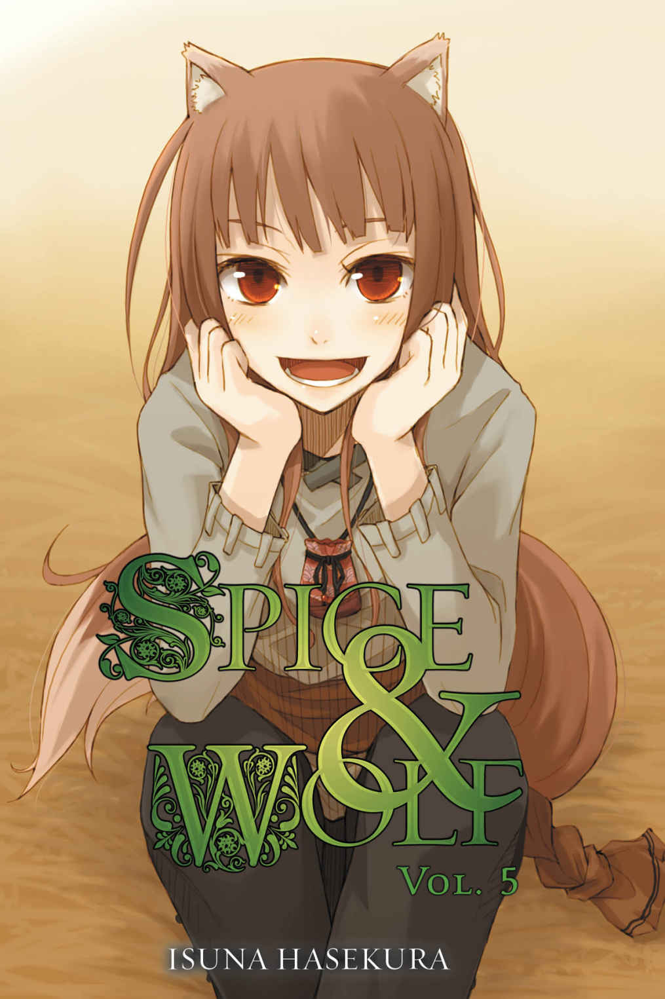
{kind=link}
Spice & Wolf
By Isuna Hasekura (Story), Jū Ayakura (Art)
Spice and Wolf is a Japanese light novel series written by Isuna Hasekura with accompanying illustrations drawn by Jū Ayakura.
The series follows a traveling merchant, Kraft Lawrence, who peddles various goods from town to town to make a living in a
stylized historical setting with European influences.[1] He meets a pagan wolf-deity girl named Holo who normally appears to
be a fifteen-year-old girl, except for a wolf's tail and ears. Lawrence and Holo start traveling together, and as they travel,
her wisdom helps increase his profits, but at the same time, her true nature draws unwanted attention from the church.
The series follows a traveling merchant, Kraft Lawrence, who peddles various goods from town to town to make a living in a
stylized historical setting with European influences.[1] He meets a pagan wolf-deity girl named Holo who normally appears to
be a fifteen-year-old girl, except for a wolf's tail and ears. Lawrence and Holo start traveling together, and as they travel,
her wisdom helps increase his profits, but at the same time, her true nature draws unwanted attention from the church.
Jobless Reincarnation
By Rifujin na Magonote (Story), Yuka Fujikawa (Art)
Mushoku Tensei: Isekai Ittara Honki Dasu (無職転生 〜異世界行ったら本気だす〜, literally Jobless Reincarnation: I Will Seriously Try If I Go To Another World),
is a Japanese web novel series by Rifujin na Magonote[Jp. 1] and is published on internet web novel website Shōsetsuka ni Narō (Shortened to Syosetu) about a jobless,
hopeless man who dies in an accident and reincarnates in a fantasy world, this time determined to have a bountiful and earnest life.
It was serialized between November 22, 2012 and April 3, 2015. A year later, it was announced the series would receive a light novel release under Media Factory's
MF Books imprint; the illustrations are done by a Pixiv user called SiroTaka[Jp. 2]. A manga adaptation by Yuka Fujikawa began serialization in the June 2014 issue
of Monthly Comic Flapper. Seven Seas Entertainment licensed the tankōbon volumes of the manga for localization in North America. The company also has licensed the
original light novels. On Syosetu's rankings, the web novel has made cumulative appearances as the most popular work on the website.
is a Japanese web novel series by Rifujin na Magonote[Jp. 1] and is published on internet web novel website Shōsetsuka ni Narō (Shortened to Syosetu) about a jobless,
hopeless man who dies in an accident and reincarnates in a fantasy world, this time determined to have a bountiful and earnest life.
It was serialized between November 22, 2012 and April 3, 2015. A year later, it was announced the series would receive a light novel release under Media Factory's
MF Books imprint; the illustrations are done by a Pixiv user called SiroTaka[Jp. 2]. A manga adaptation by Yuka Fujikawa began serialization in the June 2014 issue
of Monthly Comic Flapper. Seven Seas Entertainment licensed the tankōbon volumes of the manga for localization in North America. The company also has licensed the
original light novels. On Syosetu's rankings, the web novel has made cumulative appearances as the most popular work on the website.
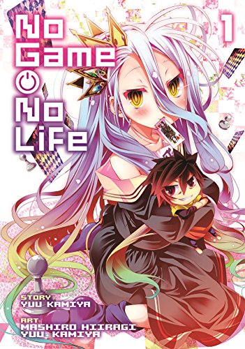
{kind=link}
No Game No Life
By Yū Kamiya (Story), Yū Kamiya (Art)
No Game No Life (Japanese: ノーゲーム・ノーライフ Hepburn: Nōgēmu Nōraifu) is a light novel series by Yū Kamiya. It is published under the MF Bunko J imprint with nine novels
released between April 25, 2012 and August 25, 2016. The author and his wife, Mashiro Hiiragi, adapted the novels into a manga series for Monthly Comic Alive in 2013. Later that year,
an anime adaptation of No Game No Life by Madhouse was announced. It premiered on AT-X between April and July 2014, and was simulcast outside Japan by Crunchyroll.
An anime film adaptation of the sixth volume, No Game, No Life Zero, premiered on July 15, 2017. A spinoff manga, No Game No Life, Please!, focusing on the character Izuna,
ran from May 27, 2015 to November 27, 2017. The No Game No Life franchise was localized in North America by several companies: Seven Seas Entertainment licensed the manga,
Sentai Filmworks the anime, and Yen Press the light novel series. The series follows Sora and his younger stepsister Shiro, two hikikomori who make up the identity of Blank, an undefeated group of gamers. One day, they are challenged by the god of
games to chess and are victorious. As a result, the god summons them to Disboard, a reality which revolves around games. Intent on maintaining their reputation as the undefeated gamers,
Sora and Shiro plan to conquer the sixteen ruling species and to usurp the god of games.
released between April 25, 2012 and August 25, 2016. The author and his wife, Mashiro Hiiragi, adapted the novels into a manga series for Monthly Comic Alive in 2013. Later that year,
an anime adaptation of No Game No Life by Madhouse was announced. It premiered on AT-X between April and July 2014, and was simulcast outside Japan by Crunchyroll.
An anime film adaptation of the sixth volume, No Game, No Life Zero, premiered on July 15, 2017. A spinoff manga, No Game No Life, Please!, focusing on the character Izuna,
ran from May 27, 2015 to November 27, 2017. The No Game No Life franchise was localized in North America by several companies: Seven Seas Entertainment licensed the manga,
Sentai Filmworks the anime, and Yen Press the light novel series. The series follows Sora and his younger stepsister Shiro, two hikikomori who make up the identity of Blank, an undefeated group of gamers. One day, they are challenged by the god of
games to chess and are victorious. As a result, the god summons them to Disboard, a reality which revolves around games. Intent on maintaining their reputation as the undefeated gamers,
Sora and Shiro plan to conquer the sixteen ruling species and to usurp the god of games.
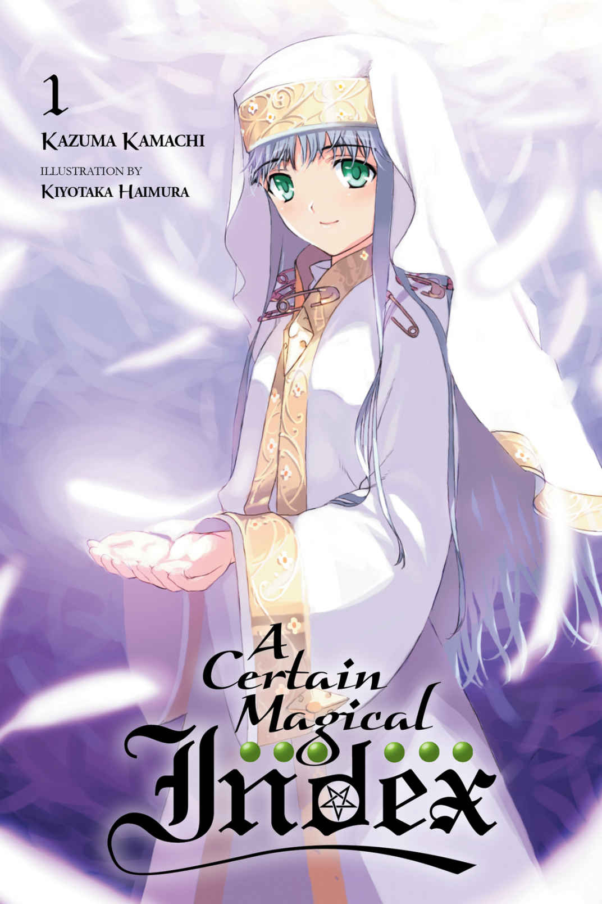
{kind=link}
A Certain Magical Index
By Kazuma Kamachi (Story), Kiyotaka Haimura (Art)
A Certain Magical Index (とある魔術の禁書目録インデックス Toaru Majutsu no Indekkusu) is a Japanese light novel series written by Kazuma Kamachi and illustrated by Kiyotaka Haimura,
which has been published by ASCII Media Works under their Dengeki Bunko imprint since April 2004. The plot is set in a world where supernatural abilities exist.
The light novels focus on Tōma Kamijō, a young high school student in Academy City who has an unusual ability, as he encounters an English nun named Index. His ability and relationship
with Index proves dangerous to other magicians and espers who want to discover the secrets behind him, Index as well as the city. Yen Press have licensed the novels in North America.
A manga adaptation by Chuya Kogino began serialization in Monthly Shōnen Gangan from May 2007. J.C.Staff produced two 24-episode anime series between 2008 and 2011.
An animated film was released in February 2013. The anime adaptations are licensed in North America by Funimation. A 26-episode third series began airing in 2018, licensed by Crunchyroll.
which has been published by ASCII Media Works under their Dengeki Bunko imprint since April 2004. The plot is set in a world where supernatural abilities exist.
The light novels focus on Tōma Kamijō, a young high school student in Academy City who has an unusual ability, as he encounters an English nun named Index. His ability and relationship
with Index proves dangerous to other magicians and espers who want to discover the secrets behind him, Index as well as the city. Yen Press have licensed the novels in North America.
A manga adaptation by Chuya Kogino began serialization in Monthly Shōnen Gangan from May 2007. J.C.Staff produced two 24-episode anime series between 2008 and 2011.
An animated film was released in February 2013. The anime adaptations are licensed in North America by Funimation. A 26-episode third series began airing in 2018, licensed by Crunchyroll.
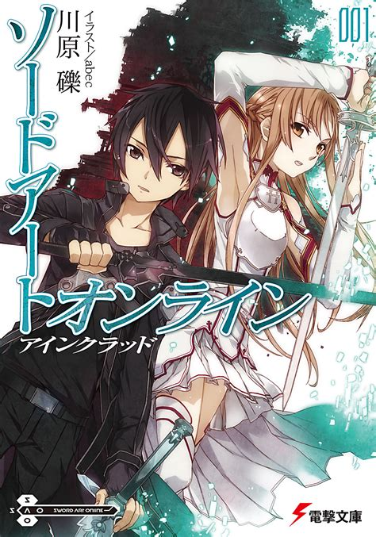
{kind=link}
Sword Art Online
By Reki Kawahara(Story), abec (Art)
Sword Art Online (Japanese: ソードアート・オンライン Hepburn: Sōdo Āto Onrain) is a Japanese light novel series written by Reki Kawahara and illustrated by abec.
The series takes place in the near future and focuses on protagonist Kazuto "Kirito" Kirigaya and Asuna Yuuki as they play through various virtual reality MMORPG worlds.
The light novels began publication on ASCII Media Works' Dengeki Bunko imprint from April 10, 2009, with a spin-off series launching in October 2012.
The series has spawned eight manga adaptations published by ASCII Media Works and Kadokawa.
The novels and four of the manga adaptations have been licensed for release in North America by Yen Press.
The series takes place in the near future and focuses on protagonist Kazuto "Kirito" Kirigaya and Asuna Yuuki as they play through various virtual reality MMORPG worlds.
The light novels began publication on ASCII Media Works' Dengeki Bunko imprint from April 10, 2009, with a spin-off series launching in October 2012.
The series has spawned eight manga adaptations published by ASCII Media Works and Kadokawa.
The novels and four of the manga adaptations have been licensed for release in North America by Yen Press.
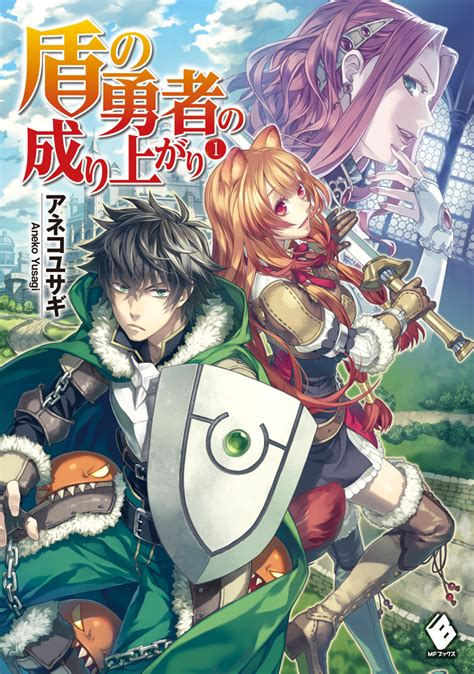
{kind=link}
The Rising of the Shield Hero
By Aneko Yusagi
(Story), Minami Seira
(Art)
watani Naofumi was summoned into a parallel world along with 3 other people to become the world's Heroes.
Each of the heroes were respectively equipped with their own legendary equipment when summoned. Naofumi happened to receive the Legendary Shield,
the sole defensive equipment, while the others received weapons capable of attacking.
Due to Naofumi's lack of charisma and experience, he ended up with only a single teammate, a beautiful woman, while others had several.
Unfortunately, on his second day Naofumi was betrayed, falsely accused, and robbed by the said teammate.
Shunned by everyone from king to peasants, Naofumi's thoughts were filled with nothing but vengeance and hatred. Thus, his destiny in a parallel world begins...
Each of the heroes were respectively equipped with their own legendary equipment when summoned. Naofumi happened to receive the Legendary Shield,
the sole defensive equipment, while the others received weapons capable of attacking.
Due to Naofumi's lack of charisma and experience, he ended up with only a single teammate, a beautiful woman, while others had several.
Unfortunately, on his second day Naofumi was betrayed, falsely accused, and robbed by the said teammate.
Shunned by everyone from king to peasants, Naofumi's thoughts were filled with nothing but vengeance and hatred. Thus, his destiny in a parallel world begins...
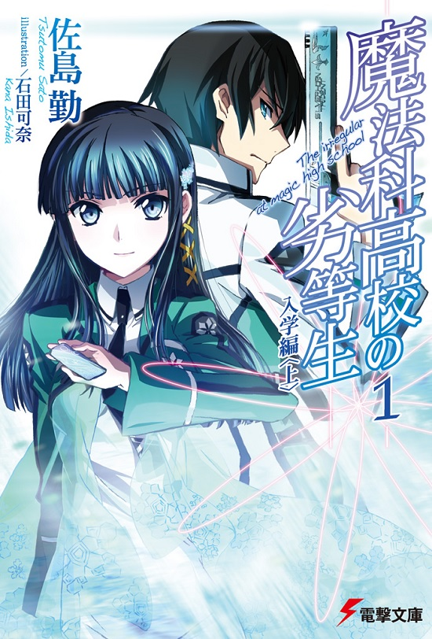
{kind=link}
The Irregular at Magic High School
By Tsutomu Satō (Story), Kana Ishida
(Art)
The story takes place in an alternate history where magic exists and is polished through modern technology.
It follows Tatsuya and Miyuki Shiba, siblings who enroll into First High magic high school. While keeping their connections to the infamous Yotsuba clan secret,
they attempt to live their daily life in peace where Tatsuya is shunned for his apparent ineptness and Miyuki is validated for her magical abilities.
The series has been well received. The light novels appeared on Sugoi Japan's 2015 polls and since 2011, is one of the top selling series in Japan with 7.7 million copies sold as of 2017.
In addition, its manga and anime adaptations also appeared on top selling charts. English reviewers had mixed to negative reception towards the anime adaptation.
The complex technicality of magic within the series was received warmly but the exposition was criticized for being heavy, unclear, and poorly executed.
It follows Tatsuya and Miyuki Shiba, siblings who enroll into First High magic high school. While keeping their connections to the infamous Yotsuba clan secret,
they attempt to live their daily life in peace where Tatsuya is shunned for his apparent ineptness and Miyuki is validated for her magical abilities.
The series has been well received. The light novels appeared on Sugoi Japan's 2015 polls and since 2011, is one of the top selling series in Japan with 7.7 million copies sold as of 2017.
In addition, its manga and anime adaptations also appeared on top selling charts. English reviewers had mixed to negative reception towards the anime adaptation.
The complex technicality of magic within the series was received warmly but the exposition was criticized for being heavy, unclear, and poorly executed.
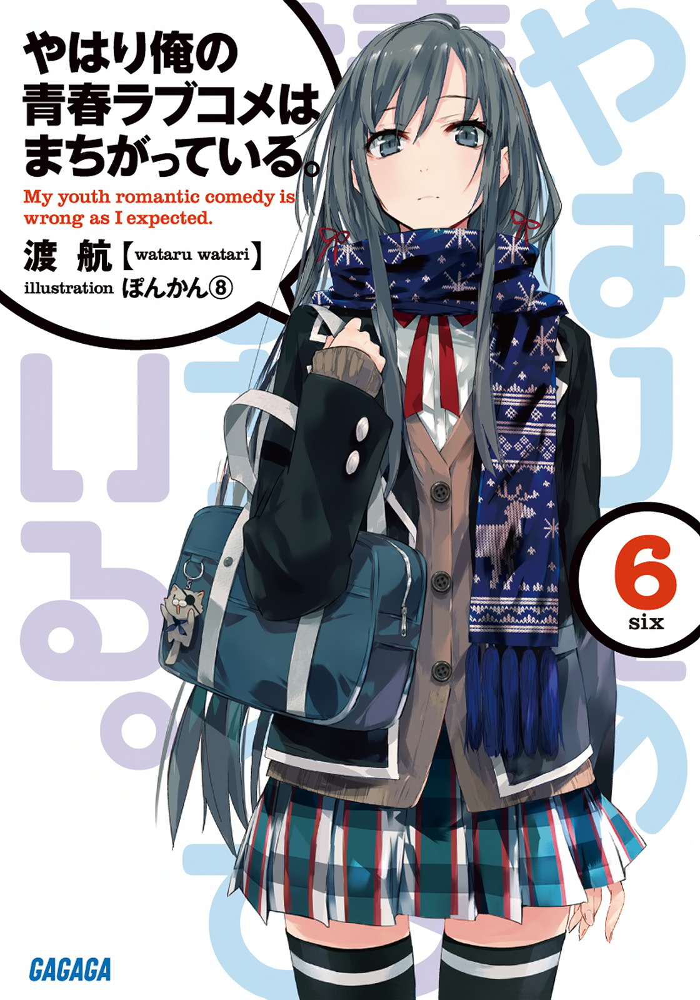
{kind=link}
My Youth Romantic Comedy Is Wrong,
As I Expected
As I Expected
By Wataru Watari
(Story), Ponkan8
(Art)
The story follows two loners: the pragmatic Hachiman Hikigaya and beautiful Yukino Yukinoshita, who, despite their varying personalities and ideals,
offer help and advice to others as part of their school's Service Club, assisted by the cheerful and friendly Yui Yuigahama.
It largely depicts various social situations faced by teens in a high school setting and the psychology driving their interactions.
offer help and advice to others as part of their school's Service Club, assisted by the cheerful and friendly Yui Yuigahama.
It largely depicts various social situations faced by teens in a high school setting and the psychology driving their interactions.